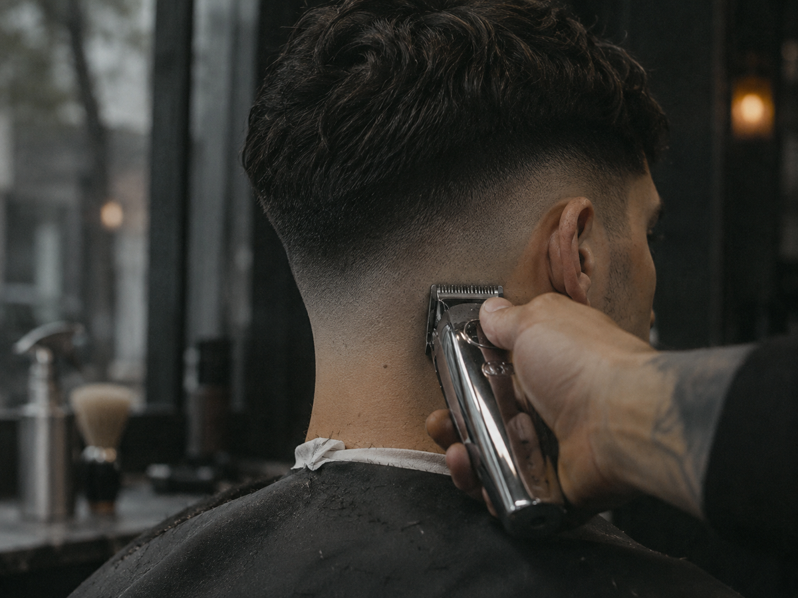
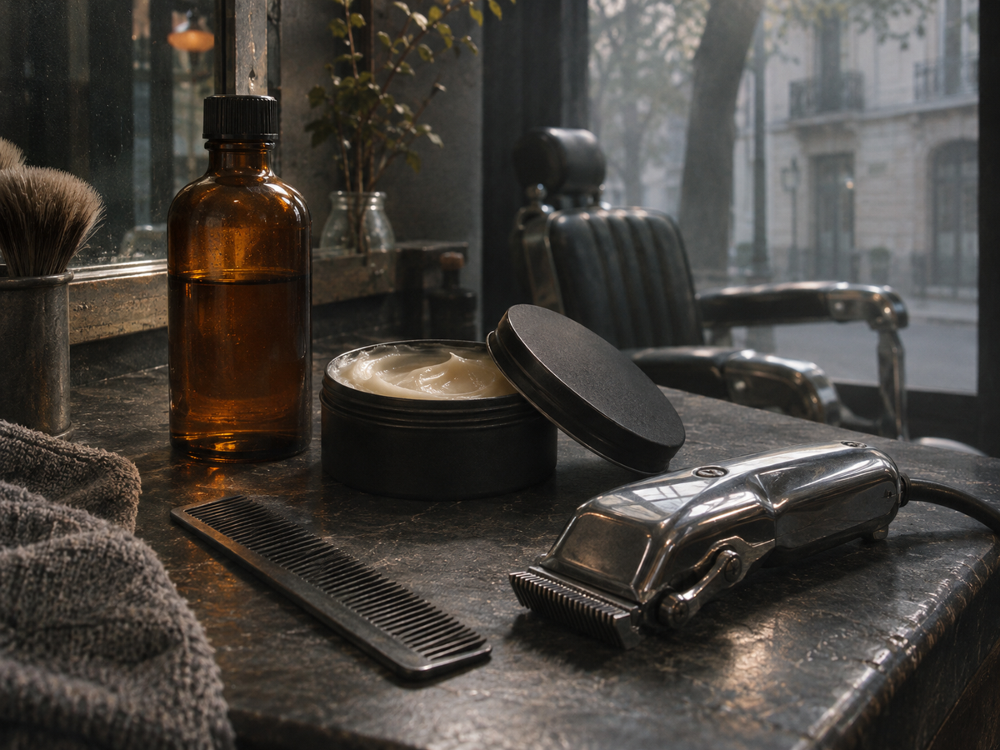

CORTE & FADE
Degradado bajo, medio o alto. Tijera para conservar movimiento y un contorno que termina de definir el corte.
Valor a confirmar por WhatsAppServicios / El ritual
Traé una idea, una foto o las ganas de cambiar.
El primer paso es escucharte.

Degradado bajo, medio o alto. Tijera para conservar movimiento y un contorno que termina de definir el corte.
Valor a confirmar por WhatsAppPerfilado y ajuste de largo para acompañar la forma de tu cara. Definimos juntos cuánto sacar y cuánto dejar.
Valor a confirmar por WhatsAppUna misma mirada para el pelo y la barba. Proporciones, transiciones y terminación, de principio a fin.
Valor a confirmar por WhatsAppDespués del sillón
Un acabado mate, algo de textura o un peinado clásico. La idea es que puedas volver a darle forma en casa.
Propuesta de servicios ilustrativa. Precios y disponibilidad pendientes de confirmar para este demo.
